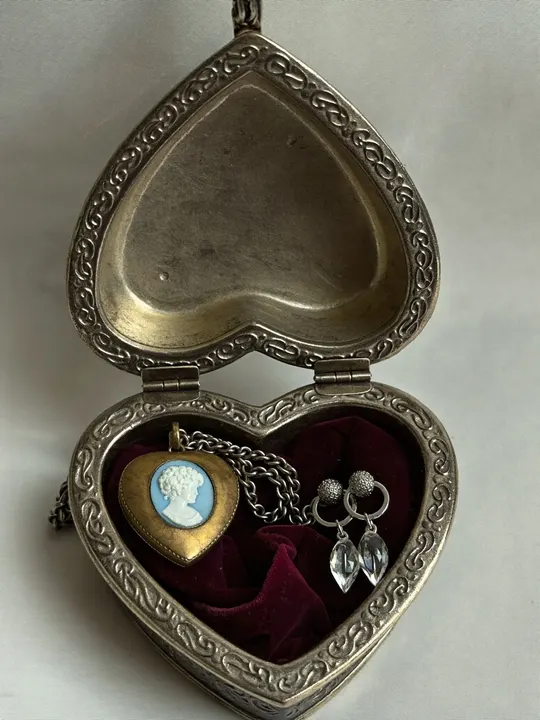
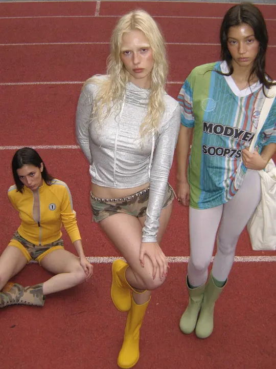

水母造型的台灯，玻璃丝透出青蓝的光，桌面杂物虚化
一句话，
生成你想要的图
用主站账号直接登录，费用从主站余额里扣，每一笔都能在主站账单里对上。
雨后的老街，霓虹倒影，胶片质感
参考图
GPT Image 2
3:4
2K
开始生成
页面的光来自正在看的作品 · 悬停任意一张，整页跟着换色
和主站共用
一个账号、一份余额
主站账号直接登录邮箱密码、二次验证都和主站一样，不用再注册。
按次从余额扣费价格跟着你的 Key 所在分组走，没有积分，也不加价。
每一笔都查得到每张图带主站请求 ID，在主站账单里一搜就有。